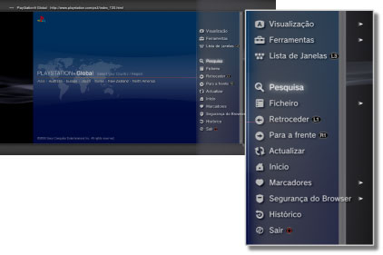
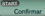

Rede > Operações básicas do navegador de Internet
Operações básicas do navegador de Internet
Visualização do ecrã

(1) |
Título da página |
|---|---|
(2) |
Endereço da página |
(3) |
Ícone SSL |
(4) |
Ícone de ocupado |
(5) |
Ícone de segurança do browser |
(6) |
Endereço de link de destino |
(7) |
Cursor |
Métodos para deslizar
| Botões de direcção | Mover o cursor para um link. |
|---|---|
Botão  + botão de direcção + botão de direcção |
Deslizar na página. |
| Manípulo direito | Deslizar na direcção desejada. |
Usar o menu
Se premir o botão  , será apresentado o menu onde pode realizar efectuar operações e definições. O menu pode ser apresentado ou ocultado ao premir o botão . Os itens do menu são diferentes no modo de pesquisa e no modo de janela.
, será apresentado o menu onde pode realizar efectuar operações e definições. O menu pode ser apresentado ou ocultado ao premir o botão . Os itens do menu são diferentes no modo de pesquisa e no modo de janela.

Introduza um endereço (URL)
Quando premir o botão INICIAR será apresentado um teclado para que possa introduzir um endereço. Se seleccionar

após introduzir um endereço, o teclado fecha e abre-se a página com o endereço introduzido.Copiar texto
Pode copiar texto de uma página para um navegador de Internet.
1. |
Utilize o manípulo esquerdo para mover o ponteiro para a localização do texto que pretende copiar e, em seguida, prima o botão |
|---|---|
2. |
Mantenha o botão |
3. |
Solte o botão |
4. |
Seleccione [Copiar] no menu que é apresentado. |
Notas
- Pode colar o texto que copiou utilizando o botão [Colar] do teclado no ecrã.
- Se seleccionar [Pesquisa] no passo 4, pode efectuar uma pesquisa na Internet utilizando o texto copiado como palavra-chave.
Imprimir uma página da Internet
Para utilizar esta função, deve primeiro configurar uma impressora seleccionando  (Definições) > [Definições da Impressora] > [Selecção de Impressora].
(Definições) > [Definições da Impressora] > [Selecção de Impressora].
1. |
Abra a página da Internet que pretende imprimir e, em seguida, prima o botão |
|---|---|
2. |
Seleccione [Ficheiro] > [Imprimir Este Ecrã]. |
3. |
Verifique as definições de impressão. |
4. |
Seleccione [Imprimir]. |
Nota
As impressoras que podem ser utilizadas dependem do país ou da região. Para mais informações, visite o Web site da SCE da sua região.
Abrir várias janelas
É possível abrir várias janelas ao mesmo tempo. Com o cursor posicionado sobre o link, prima e mantenha premido o botão  até que o link abra numa janela diferente.
até que o link abra numa janela diferente.